AI 产品经理全局
职责边界、能力模型与成长路径，行业现状与岗位分布。
交付物：职业路径判断 查看详情 →老师先了解你的履历、教育背景和求职意向，再判断这条路径怎么走最短。有算法背景的，传统人工智能可以快速过；B 端产品出身的，原型与需求管理可以压缩——把时间花在你真正缺的那一段。
按依赖关系排，不是按热度排：先建立技术能力边界，再进大模型，然后才谈 RAG 和 Agent，最后落到项目。直播教学，9 个阶段、32 个模块、108 课时、8 个项目。
大厂导师带做，对标企业真实项目标准，不做玩具 Demo。走完七步，你手里会有：一份完整 PRD、一套评估指标、一份复盘材料，以及一段能讲三分钟的闭环叙述。
拆岗、押题、模拟、复盘。简历逐句改，面试一对一磨。腾讯会议一对一，全程录屏、云端保存，简历修改与面试模拟都在服务内，不再另收费。
我们是「一站式AI产品经理入门指南」与「从0开始学 AI agent」两个开源知识库的创建者，两个库都是互联网公开的。以上为知识库后台数据，区间 2025/09/11 – 2026/03/09。
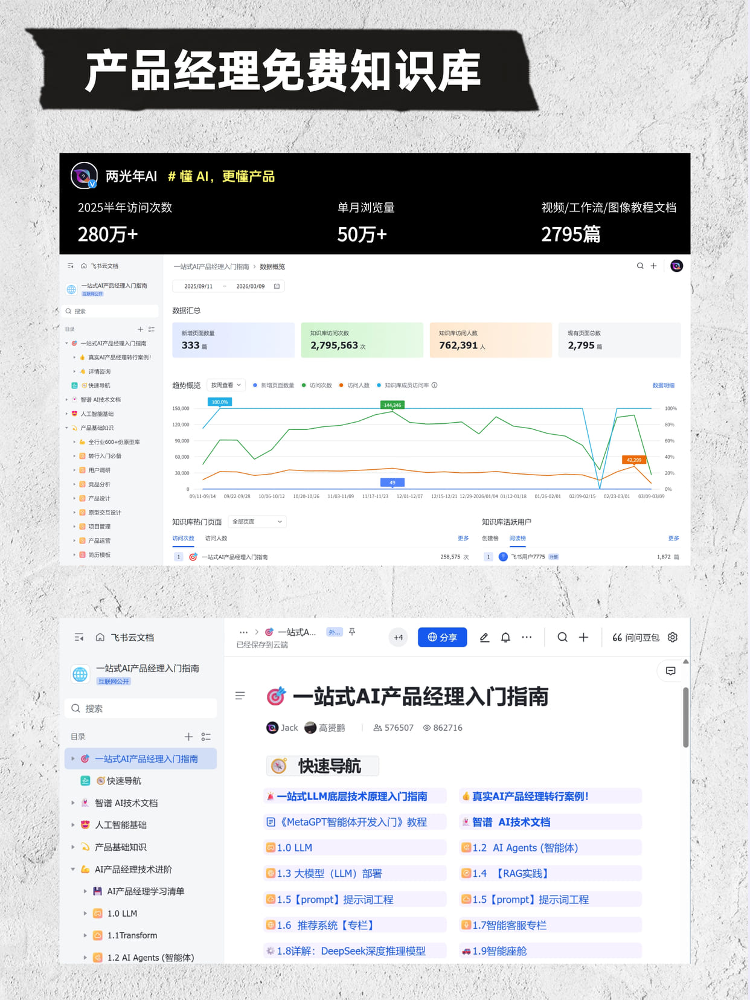
Fragmented vs Systematic
这两种学法我们见得太多了。差别落在四个地方——顺序、交付、简历、投递。
01 / 依赖关系
02 / 手里有什么
03 / 经不经得起追问
04 / 怎么投
说白了，系统学习不是多学，是少走弯路。
Learning Path
我们做的第一步不是上课，是规划。中间每周复盘一次，看这一段走得对不对、要不要调整方向。
履历 / 教育背景 / 求职意向 —— 定路径，定学什么
认知 → 传统 AI → 大模型 → Agent，建立技术能力边界
产品系统课 + AI 项目实战，产出 BRD / MRD / PRD + 评估指标
简历精修 + 面试辅导，速刷项目库补素材
看这一段走得对不对、要不要调整方向
需求分析 / 原型 / PRD / 评估指标
被追问三层还站得住
不是所有人都要从第一个阶段开始，也不是所有人都要走完九个阶段——把时间花在你真正缺的那一段。
Curriculum · 9 Stages 32 Modules
它不是并列的九门课，是一条有先后依赖的链路：前面不理解技术边界，后面的方案设计就只能靠抄；前面没动手做过项目，后面的简历和面试就没有素材可讲。每个阶段都有交付物，不是听完就算。
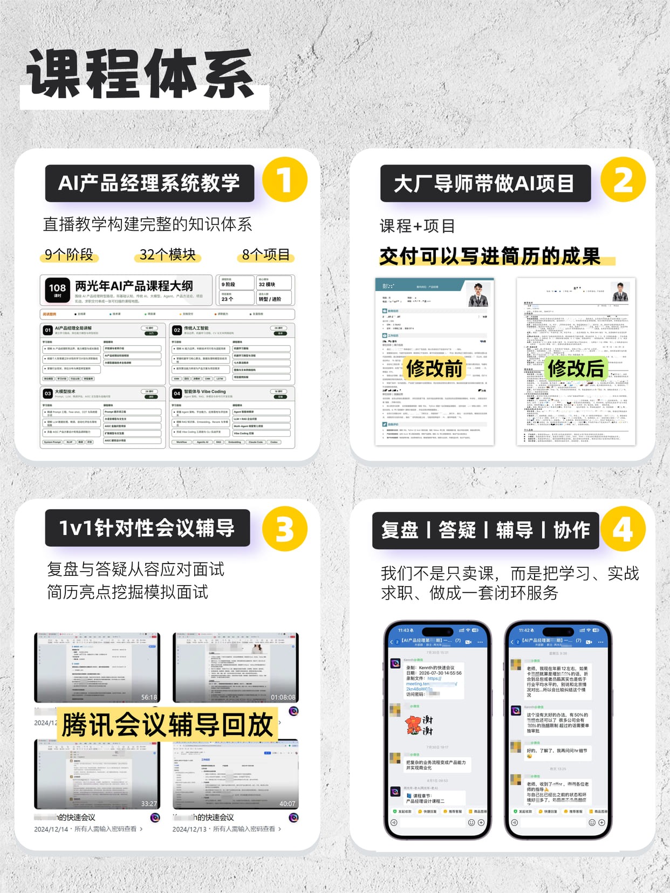
职责边界、能力模型与成长路径，行业现状与岗位分布。
交付物：职业路径判断 查看详情 →机器学习流程、七大算法精讲、CV 与文本网络结构。学它不是为了写代码，是为了在需求评审上能判断方案做不做得成，而不是被一句“做不了”堵回来。
交付物：技术方案可行性判断 查看详情 →Prompt 工程、LLM 数据处理与微调、自动化评估、AIGC 文生图与行业问答。
交付物：大模型方案与评估指标 查看详情 →Agent 架构、RAG 知识库、Embedding 与 Rerank、Multi-Agent 项目，最后用 Claude Code 做 CLI 实战。
交付物：可跑的 Agent / RAG Demo 查看详情 →产品核心思维、业务流程与需求管理、原型与交互设计，B 端 CRM 加 C 端电商实战，BRD / MRD / PRD 三份文档自己写出来。
交付物：BRD / MRD / PRD + 原型 查看详情 →智能客服、AIGC 提效、短视频 PLC 挂载三个方向，从需求分析、数据训练到模型验收和项目复盘，走完整闭环。
交付物：完整项目 + 复盘材料 查看详情 →简历逐句改、优秀简历结构分析、面试复盘与追问训练。
交付物：一版经得起追问的简历 查看详情 →竞品与市场定位、功能与非功能需求、数据收集清洗标注与训练集划分，把前面七个阶段串成一条线。
交付物：端到端实操记录 查看详情 →自动驾驶、个性化推荐、评论意向预测、奢侈品估价、人脸识别、智能体搭建等方向，各配 PRD 与复盘话术，面试前补素材用。
交付物：一整套可套用的复盘话术 查看详情 →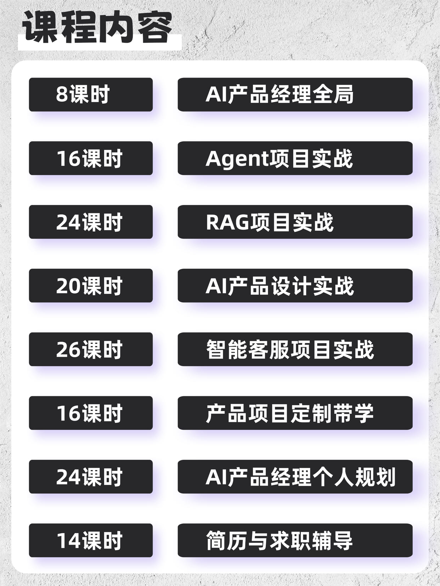
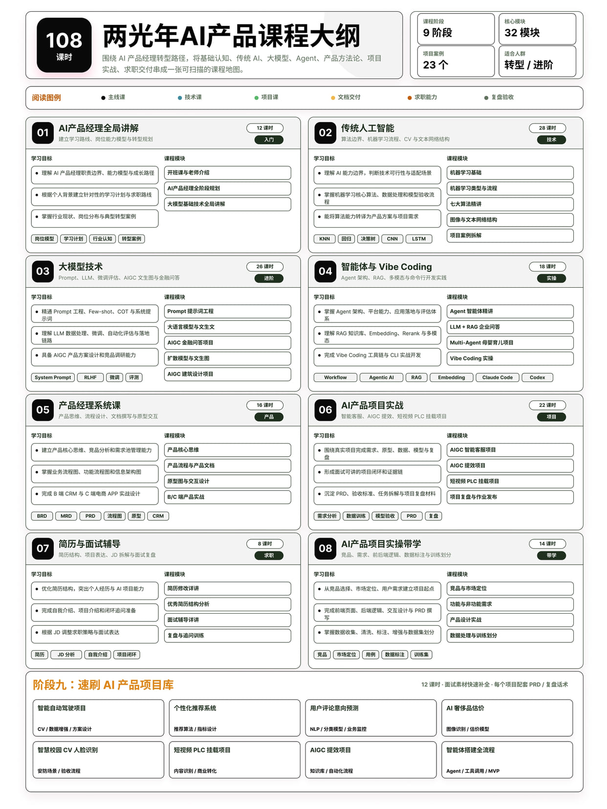
Project Method · 7 Steps
我们的项目不做玩具 Demo，对标的是企业真实项目标准。围绕短视频 AI 识别、AIGC 提效、智能客服这些真实业务场景，走七个步骤。
STEP 01
从有真实用户和真实约束的场景开始
STEP 02
把“想做个 AI”拆成可验证的需求
STEP 03
该用 RAG 还是微调？为什么？分水岭之一
STEP 04
把方案写成能被评审、能被开发的东西
STEP 05
给出指标，证明方案达到了业务目标
STEP 06
把过程沉淀成可复述的方法
STEP 07
让项目在简历和面试里真的起作用
第三步和第五步是分水岭。技术方案设计决定你会不会用大模型、RAG、Agent、多模态来解决问题；模型验收与效果评估决定你能不能给出指标、证明方案达到了业务目标。面试官追问的通常是这两段。
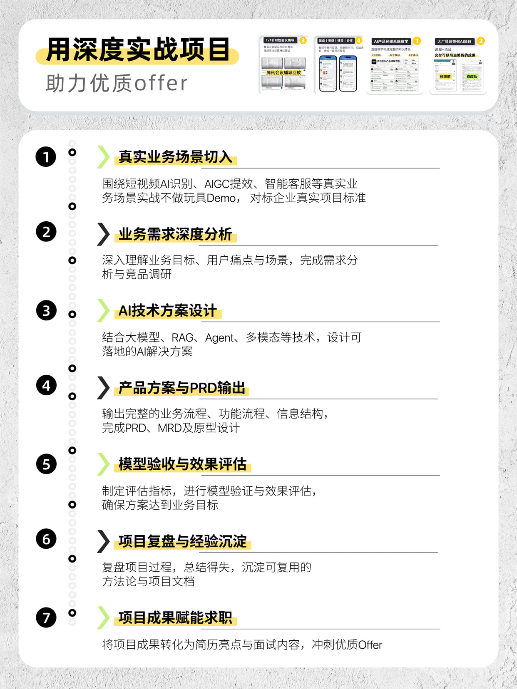
Career Coaching
所有辅导都是腾讯会议一对一，全程录屏、云端保存，随时回看。一个带学群里多位老师在线，学习过程中的问题有问必答。
Resume · 四件事
很多人不是没有经历，是没写出来。
Interview · 四件事
被追问两层就卡住，通常不是能力问题，是没练过。
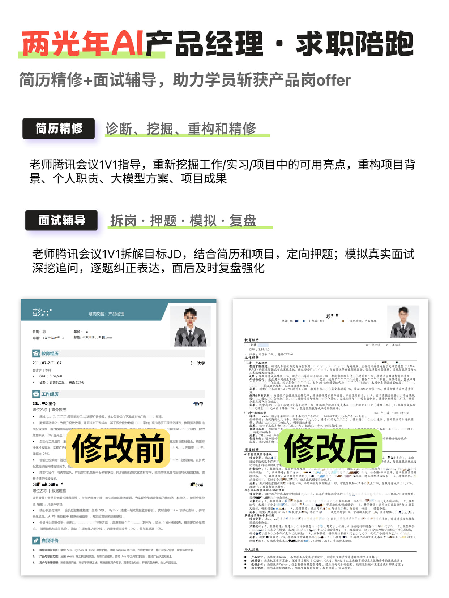
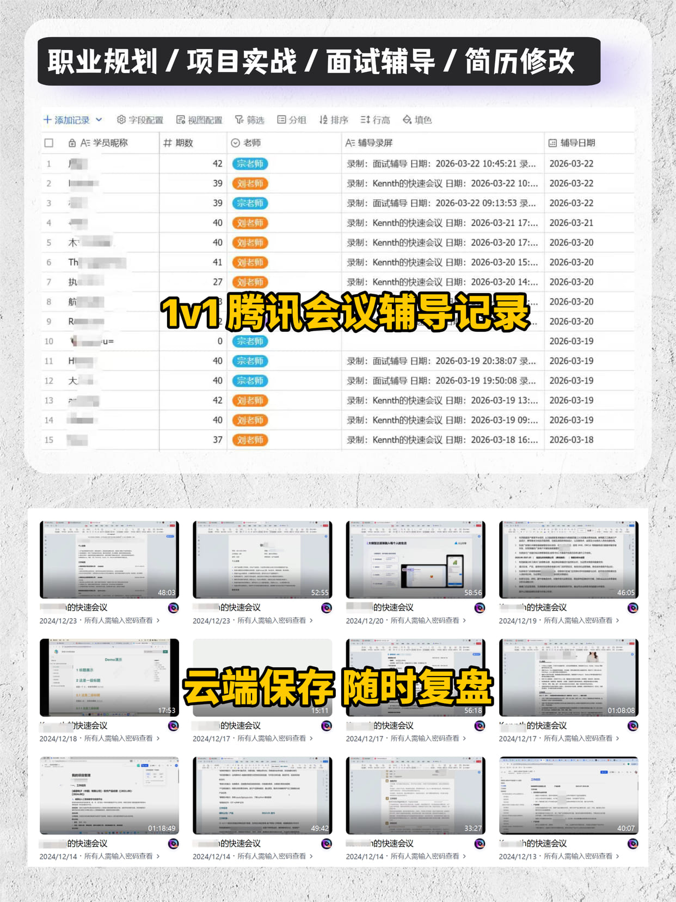
Student Stories
以下截图经学员授权后使用，均已做脱敏处理。
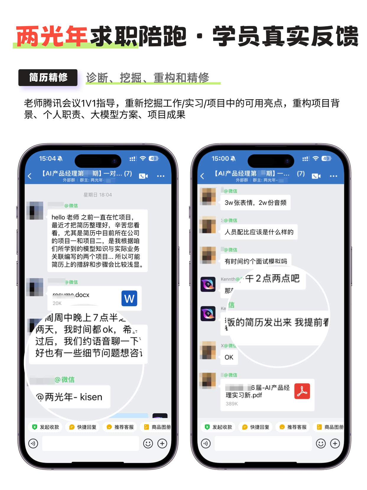
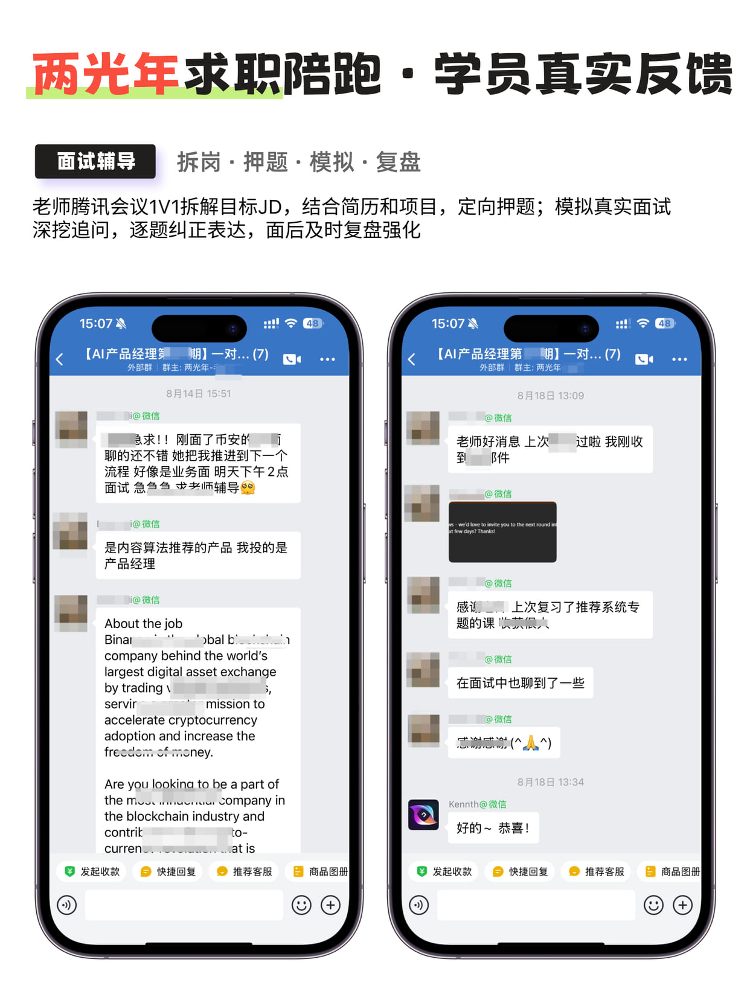
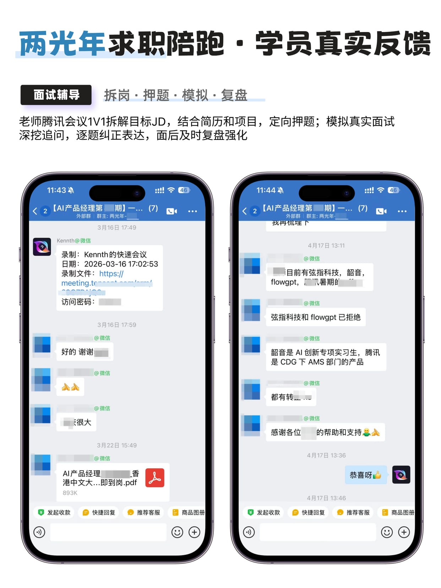
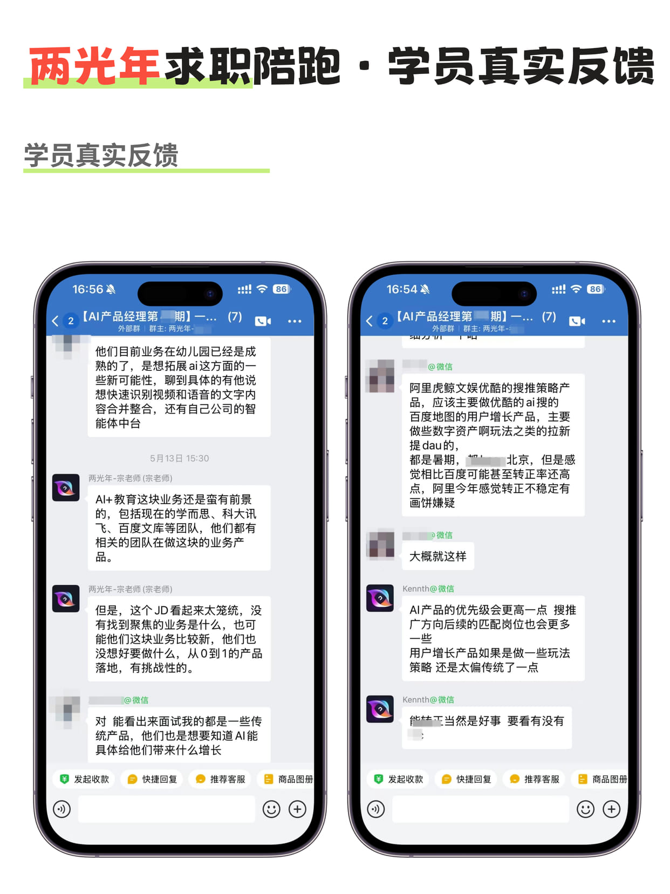
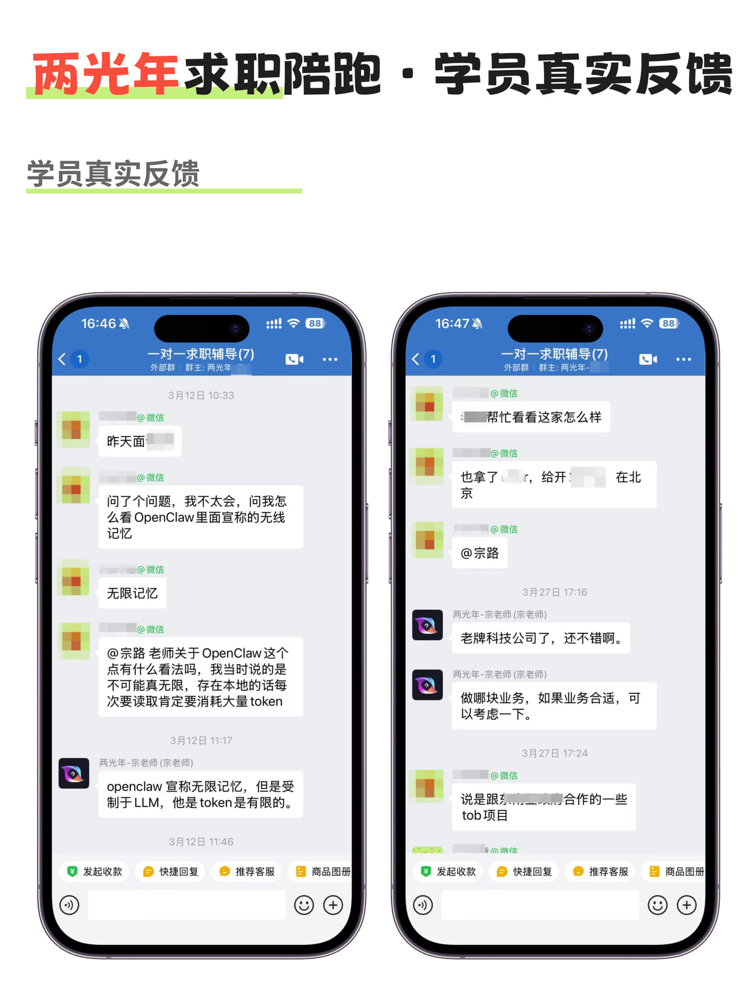
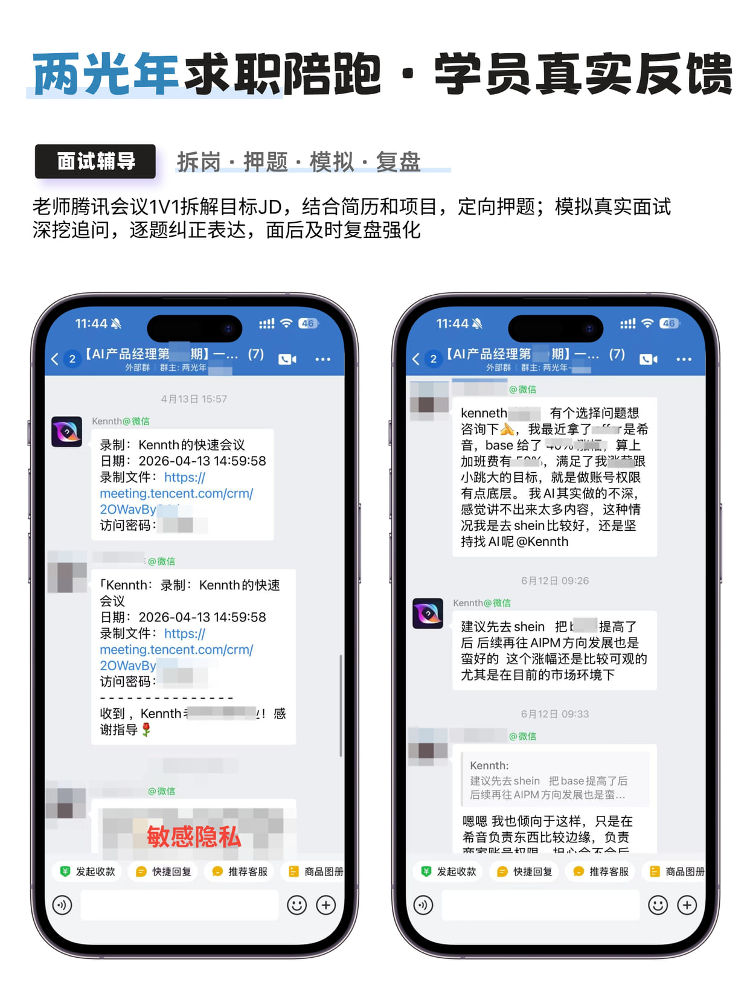
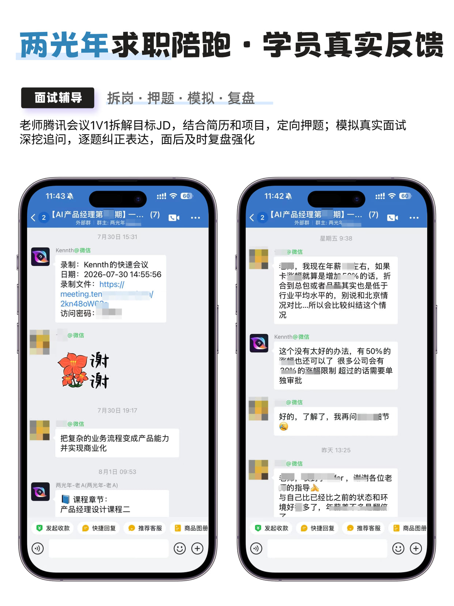
← 左右滑动查看全部 7 张 →
需要说明的是：转行结果取决于个人背景、投入时间和当时的市场环境，个体经历不代表普遍效果。我们不承诺“学完就进大厂”，也不承诺任何薪资数字。
Who It's For
说清楚适合谁，也把不适合谁讲在前面。
把你的履历、教育背景、目标岗位和时间预算说清楚，我们会告诉你：这条路径大概要多久、你现在最该补的是哪一段、哪些课你可能不需要上。如果判断下来不适合，我们会直接说。
Before You Start
你只需要准备三件事：现在的岗位与主要职责（以及做过的最完整的一个项目）、教育背景与算法 / 数据基础、目标岗位方向与能投入的时间预算（每周几小时、几个月）。我们会逐个给到针对性的路径判断，而不是一套通用话术。